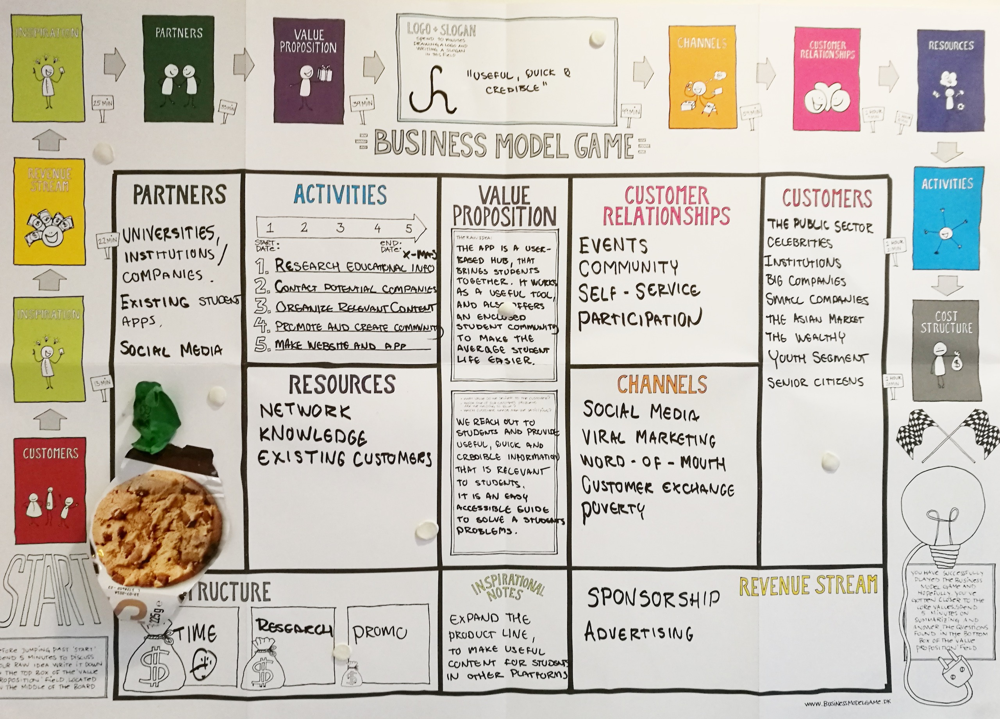
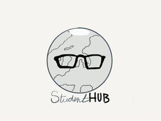
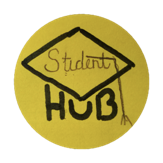
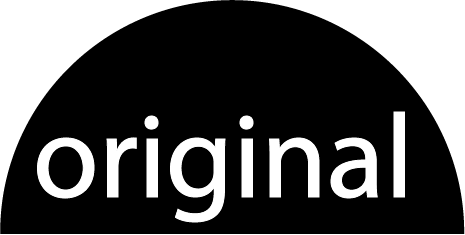

The Student Hub
-the reservoir & ever refreshing source of everything that’s student-life related
For this group project, we decided to get out of our comfort zone, i.e. taking on the tasks that we are not familiar with or not good at, which as it turned out was not a good idea.
My main tasks:
ideation, report-writing, presentation, some design work
By Student
For Students
Everything related to student life:
Discount, study abroad, hobby group, rent/housing,
jobs and internship, etc.
. Access study resources
. Show talent
. Share knowledge
How we found our mission, vision, value and goal
In the ideation week, we discussed a lot of ideas, big or small, about a wide range of topics, from grocery shopping to investment in Startups, from cafe shops in the neighbourhood to cyber identity that’s beyond the border of a traditional society. We have ideas that are based on our needs in today’s life. We also have ideas that express our dreams and wishes for the future. We are willing to do a lot and we have some knowledge in certain fields already. But it’s not enough. Then we realised that what we essentially need, as students, is a network that can unite us all; a platform where we can share knowledge and teach each other more; a stage that’s for showcasing individual skillset and thereafter effectively bridge every possible collaboration and cooperation to make us even wiser and stronger. In order to be able to focus more on study and unfolding our full potential, we need as well a community where we help and support each other by sharing information and making day-to-day student life much easier.
The current situation is that there are a lot of platforms, services and SoMe solutions out there already, and we, as students, use them all. A conclusion might be drawn here that we already have plenty and we don’t need another one. Yet let’s look at this situation again and think in another way: we use them all, because none of the existing platforms is dedicated to students and targeting students’ needs. We use them all, because we have to do so, and even with all of them, we still get lost every now and then, here and there.
So we decided to build a Student Hub, the reservoir and ever refreshing source of everything that’s student-life related. Students could find study resources and teaching materials here, but it would be more flexible than Fronter; students could look for fellows with the same interests/focus, but it would be more professional than Facebook; students could ask academic questions and get instant answer, but it would be more precise and tailored than what google provides; students could read about much insights in each study field like in many other specialty forums, but they only need one login to have access to them all.
We believe in
.. sharing as the way to develop and advance. We value original work and open discussion.
We meet the existing needs from students and we built the bridge that opens up even more opportunities. We would like that whenever a student needs anything, he or she reaches out to the Student Hub.
The form of Student Hub
.. would be a combination of an online archive, a forum and a community media. Because it hosts many different sections, some of which have focus on providing accurate information for users to receive, while others rely on active user input, user interaction even co-creation, we would fine-tune each section and find the appropriate solution for the particular case, which will be discussed below.

Business Model Canvas
Design Process
 We did some tests with the first design, first covering the part of the text “Student Hub” at the bottom then showing the text. Without the text, most test subjects didn’t get what kind of product this log could represent. As the glasses are so dominant, many of them assumed it’s a business selling glasses and together with the globe they guessed that the it’s a online-store of glasses. Some test subjects based their guess on the globe, and together with the glass they thought the app was about travel and get a deeper view of the world. Other conclusions drawn from user test are: the overall round shape was not enough to hint a community and the face with glasses on was not enough to hint it’s about students.
In order to make the “student” element clearer, we tried the second design. Based on the feedback, it’s quite clear that this design could hint that the app’s about students. Yet it’s not clear which services/information could a student get from this app. The letters “SH”, initials for Student Hub, presented no clear meaning for the test subjects. The “book” in the design did hint knowledge, which’s one of the key elements we wanted to express, but it’s only one of the elements. Even though the Student Hub does provide study-related materials and informations, it’s not an online-course app, which this logo could represent.
In the end we decided not to use this logo and decided to work on a logo that could show that The Student Hub holds everything that’s related to students.
Another conclusion we drew from these two design approach was that it’s probably not a good idea to have a design that’s too detailed and realistic. Apart from the limited real-estate on the phone, which makes displaying such design almost impossible, such design could potentially “mislead“ the viewer regarding what the app is about, because everyone connect certain object to different things, like in the case of the globe, we were hoping to represent unity with the globe while others connected it with travel.
Read the full design documentation
Design Tests & Challenges
With regards to color scheme, we did some tests as well.
More users agreed with the color choice which we thought was "wrong" in terms of design.
Tesing of night mode was not fruitful either.
Even though most user welcomed this function, they seemed to have quite different preferences regarding which background- and forground-color combination is most comfortable to read.
Pitch Day
Strategy:
❶ Relate to the audience
❷ Short intro of ideas and mention why it's needed
❸ Demo of the app to give concret examples of what the product can do
❹ Go back to the ideas and compare with competitors in order to make the need of the product and its advantages clearer
 The presentation slidesThe XD prototype
Web prototype
The Student Hub
A network that can unite us all.
A community where we help and support each other and make our study and day-to-day student life easier.
A platform that bridges collaboration and cooperation to make us even wiser and stronger.
Let's JOIN!
VIDEO